EP5 龐貝：分場表
C 分場（第 10～12 步）：把劇本分成一場一場（不拆鏡頭）→ 每場的地圖 → 這集新的設定圖。這份報告可以不看，流程不停。
摘要第 10～12 步
場一覽第 10 步
| 場 | 地點 | 時間 | 段 | 旁白句 | 地圖 |
|---|---|---|---|---|---|
| 1 | 博士的實驗室（研究小屋一樓） | 現代 | 0 | 4 | lab |
| 2 | 博士的實驗室（研究小屋一樓） | 現代 | 1 | 9 | lab |
| 3 | 龐貝街上 | 爆發那天・上午 | 2 | 9 | ep5_street |
| 4 | 插圖：維蘇威的身世——板塊與水（不是實景） | — | 3 | 12 | — |
| 5 | 插圖：維蘇威為什麼這麼猛（不是實景） | — | 4 | 10 | — |
| 6 | 龐貝街上・爆發開始 | 爆發那天・中午 | 5 | 17 | ep5_street |
| 7 | 龐貝街上・落石 | 爆發那天・下午 | 6 | 12 | ep5_street |
| 8 | 龐貝街上・逃生決策 | 爆發那天・下午 | 7 | 20 | ep5_street |
| 9 | 往北的海邊大路（經過赫庫蘭尼姆） | 爆發那天・傍晚 | 8 | 12 | ep5_road |
| 10 | 插圖：火山碎屑流（不是實景） | — | 9 | 20 | — |
| 11 | 插圖：考古揭曉與今昔（不是實景） | — | 10 | 15 | — |
| 12 | 往北的路・灰雨中 | 爆發那天・晚上 | 11 | 6 | ep5_road |
| 13 | 博士的實驗室（研究小屋一樓） | 現代 | 12 | 6 | lab |
| 14 | 博士的實驗室（研究小屋一樓） | 現代 | 13 | 2 | lab |
每一場第 10、11 步
第 1 場 博士的實驗室（研究小屋一樓） 現代・段落 0
旁白全文
- 0-01你一推開實驗室的門，
- 0-02（停）就被噴了一臉。
- 0-03原來博士正在做火山模型，小蘇打加醋，噴得滿屋子都是泡泡。
- 0-04他很得意，你很不得意。
出場角色和狀態
- HERO 夏天的打扮（跟 EP3、EP4 一樣：短袖、短褲、拖鞋，沒帽子、沒背包），一開門就被噴一臉泡泡
- PROF 做火山模型實驗、很得意
道具
火山模型（小蘇打加醋）、滿屋子泡泡
地圖 lab第 11 步

第 2 場 博士的實驗室（研究小屋一樓） 現代・段落 1
旁白全文
- 1-01你拿出一本小冊子，上面記著博士欠你的錢，一頁比一頁長。
- 1-02博士看都沒看，就把一個空玻璃罐塞進你手裡。
- 1-03他說啊，學界為了一座火山到底是夏天還是秋天爆發，一直吵個不停。
- 1-04傳統的說法，是西元 79 年的 8 月 24 日。
- 1-05可是後來的證據，讓不少學者覺得，應該是秋天。
- 1-06總之，他要你回到那一天，裝一罐火山灰回來。
- 1-07你一聽到「回到過去」，腦子裡只有一件事：
- 1-08古羅馬的錢幣，應該很值錢吧。
- 1-09於是你點點頭。（停）生存指南，又留在了桌上。
出場角色和狀態
- HERO 夏天的打扮（跟 EP3、EP4 一樣：短袖、短褲、拖鞋，沒帽子、沒背包），拿欠薪本討錢；拿到空玻璃罐
- PROF 把玻璃罐塞給 HERO；在黑板畫火山、太陽、落葉和問號
道具
欠薪本、空玻璃罐、黑板、生存指南（留在桌上）、時光機
地圖 lab第 11 步
第 3 場 龐貝街上 爆發那天・上午・段落 2
旁白全文
- 2-01光一閃，你站在一座熱鬧的海邊城市：龐貝。
- 2-02這是羅馬人的港口城鎮，城裡大概住了一萬多人。
- 2-03街上到處都是噴泉。
- 2-04路邊一攤一攤賣熱食，櫃台裡嵌著陶罐，根本是羅馬人的速食店。
- 2-05麵包店賣一種圓圓的麵包，上面劃成八瓣，剝起來很方便。
- 2-06有些還被烤成了黑炭留到今天，連麵包師傅蓋的印章都看得到。
- 2-07這裡的酒，是用長在火山土裡的葡萄釀的。
- 2-08火山噴過的地方，土特別肥，所以人總愛住在火山旁邊。
- 2-09你一邊逛，一邊盯著地上，想撿幾個古羅馬的紀念品回去賣。
出場角色和狀態
- HERO 夏天的打扮（跟 EP3、EP4 一樣：短袖、短褲、拖鞋，沒帽子、沒背包），拿著空玻璃罐，東張西望找紀念品
- ROMANS 龐貝居民（穿羅馬短袍、長袍的男女老少），逛街、買東西
道具
噴泉、熱食小攤（櫃台嵌陶罐）、麵包店（八瓣圓麵包）、遠方的維蘇威火山
地圖 ep5_street第 11 步

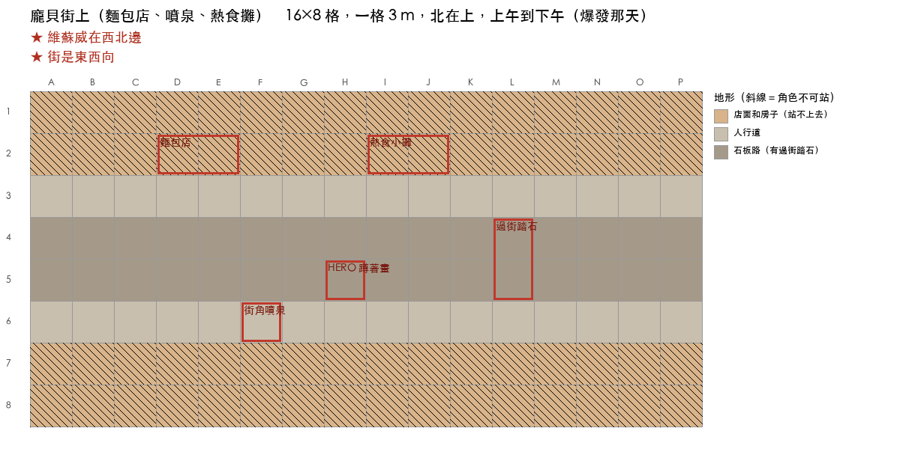
第 4 場 插圖：維蘇威的身世——板塊與水（不是實景） —・段落 3
旁白全文
- 3-01遠方，就是維蘇威火山，現在看起來很安靜。
- 3-02這座山，是怎麼來的？
- 3-03義大利底下，有一塊地殼，正慢慢鑽進歐洲板塊的下面。
- 3-04這塊地殼，本來是從非洲大陸裂出來的。
- 3-05地底深處雖然很熱，但壓力很大，岩石反而不容易融化。
- 3-06想讓它融化，得靠一點特別的東西，通常是水。
- 3-07那塊潛下去的地殼，就帶著海水，一路鑽進又熱又深的地方。
- 3-08水會讓岩石變弱，就像在結冰的路上撒鹽，冰就融了。
- 3-09岩石一融，比較輕的岩漿就往上冒。
- 3-10世界上很多最猛的火山，都是這樣生出來的。
- 3-11像 1883 年的喀拉喀托，
- 3-12還有兩萬六千多年前，紐西蘭的陶波火山，炸毀了差不多一整個國家那麼大的地方。
出場角色和狀態
- HERO 夏天的打扮（跟 EP3、EP4 一樣：短袖、短褲、拖鞋，沒帽子、沒背包）（只在第一句：抬頭看遠方的維蘇威）
道具
插圖：地殼從非洲那邊插到義大利底下、水跟著板塊潛進地底、岩漿往上冒、鹽撒在結冰路面、喀拉喀托、陶波火山
地圖 （沒有實景，不用地圖）第 11 步
第 5 場 插圖：維蘇威為什麼這麼猛（不是實景） —・段落 4
旁白全文
- 4-01而且，維蘇威可不是普通的火山。
- 4-02它的岩漿非常黏，比水黏上成千上萬、甚至上百萬倍。
- 4-03就算是最稀的岩漿，也像室溫下的蜂蜜一樣黏。
- 4-04岩漿往上衝的時候，還會烤到地底的石灰岩，把裡面的二氧化碳逼出來，像搖過的汽水一樣狂冒泡。
- 4-05再加上，它已經安靜好幾百年了，上一次冒火，據說要追溯到兩千多年前。
- 4-06悶得越久，壓力就積得越大。
- 4-07大約四千年前，它還有過一次更猛的大爆發，把一整群青銅時代的人都埋了。
- 4-08所以這一次，它的威力在火山爆發指數裡，拿到了滿分八分裡的五分，
- 4-09跟 1980 年美國的聖海倫斯火山同一級。
- 4-10能拿到八分的，非常非常少。
出場角色和狀態
- —
道具
插圖：一大鍋黏稠的蜂蜜、悶著的汽水瓶、岩漿烤到石灰岩冒泡、青銅時代的人群、聖海倫斯火山
地圖 （沒有實景，不用地圖）第 11 步
第 6 場 龐貝街上・爆發開始 爆發那天・中午・段落 5
旁白全文
- 5-01你還在逛，地面突然晃了一下。
- 5-02其實這裡的人，早就習慣地面在晃了。十幾年前一場大地震震壞的房子，有很多到現在都還沒修好。
- 5-03然後，遠方傳來一聲像巨雷一樣的轟隆。
- 5-04維蘇威的山頂，衝出一大團雲。
- 5-05它長得像一棵雨傘松，直直往上衝。
- 5-06地底的岩漿裡溶著很多氣體，山頂一裂開，就像打開一罐被搖過的超大汽水，
- 5-07滾燙的氣體用比聲音還快的速度衝出來。
- 5-08它把四周的冷空氣吸進來、加熱，再往天上衝。
- 5-09最猛的時候，每一秒鐘就噴出十幾萬噸的岩石和火山灰，
- 5-10一口氣衝到三十公里高，比客機飛的高度還高得多。
- 5-11那團雲，熱到可以把鉛融化。
- 5-12這次爆發放出的熱量，大概是廣島那顆原子彈的十萬倍。
- 5-13後來，這種噴發柱就用一個目擊者的名字命名，叫做「普林尼式」。
- 5-14而你，離這座火山，只有十公里。
- 5-15對了，這一天到底是哪一天？
- 5-162018 年，考古學家在龐貝一棟房子的牆上，找到有人用木炭寫下的日期，大約是十月中。
- 5-17所以有學者猜，它其實是秋天爆發的，不過到現在還在吵。
第 7 場 龐貝街上・落石 爆發那天・下午・段落 6
旁白全文
- 6-01那天的風，正好把那根噴發柱，吹向龐貝。
- 6-02天上開始落下東西。
- 6-03一開始，是小小的浮石，像下雪一樣。
- 6-04你伸手接了一顆，輕輕的，一點也不可怕。
- 6-05其實，這還不是最危險的時候。
- 6-06可是它一個鐘頭、一個鐘頭地落，
- 6-07越來越大顆，越砸越用力，
- 6-08最後，連屋頂都被壓垮了。
- 6-09城裡有些人，沒有馬上逃。
- 6-10他們關上門，躲進屋子裡避落灰。
- 6-11看起來很謹慎。
- 6-12（停）其實，是錯的。
第 8 場 龐貝街上・逃生決策 爆發那天・下午・段落 7
旁白全文
- 7-01你開始慌了。生存指南呢？
- 7-02（停）在博士的桌上。裡面還有一張龐貝逃生地圖。
- 7-03你只好自己想。
- 7-04龐貝的東邊是山，西邊是海。
- 7-05能跑的，只有兩條路：往北去那不勒斯，或往南去史塔比亞。
- 7-06好消息是，維蘇威不會流出一條像河一樣的熔岩。
- 7-07熔岩那麼黏，就算流過來，會被輾平的是房子這種不會動的東西，人通常跑得過、閃得開。
- 7-08壞消息是，它噴的是又燙又快的氣體和火山灰。往南、往北，其實都躲不太掉。
- 7-09重點只有一個：跑得夠早。
- 7-10往南的話，你得一路跑過史塔比亞，它就在南邊幾公里外。
- 7-11可是往南是順著風，火山灰和浮石會一直追著你落。
- 7-12後來發現的遇難者，大多在南邊；成功逃出來、留下紀錄的人，大多往北。
- 7-13有一位叫老普林尼的羅馬學者，就死在南邊的史塔比亞。
- 7-14所以，往北。
- 7-15從龐貝一路走到那不勒斯，大約二十公里出頭。
- 7-16還好，往那不勒斯的路，修得很好。
- 7-17而且很多人一開始選擇躲在家裡，路上反而不擠。
- 7-18逃命的時候，別一口氣把力氣用光。走走停停，有乾淨的水就喝一點。
- 7-19那不勒斯大學的法醫人類學家 Petrone 說：
- 7-20很多龐貝人其實活下來了，但大概只有那些一看情況不對、馬上就走的人。
第 9 場 往北的海邊大路（經過赫庫蘭尼姆） 爆發那天・傍晚・段落 8
旁白全文
- 8-01你抓起一把落在地上的火山灰，裝進罐子裡，開始往北走。
- 8-02往北的路上，會經過一座海邊小城：赫庫蘭尼姆。
- 8-03這裡是羅馬有錢人的度假勝地，有大理石大宅，還有藏著古希臘、羅馬經典的圖書館。
- 8-04它就在維蘇威的西邊，大概七公里。
- 8-05爆發的頭幾個鐘頭，風把火山灰往另一邊吹，這裡幾乎沒有落灰，看起來反而很安全。
- 8-06可是，它比龐貝更靠近火山。
- 8-07第一波最可怕的東西，會先掃到這裡。
- 8-08而那一波，是在半夜來的。
- 8-09所以，你得趁白天，就穿過赫庫蘭尼姆，一直往前走。
- 8-10它離龐貝大約十幾公里，用正常走路的速度，要走上好幾個鐘頭。
- 8-11過了赫庫蘭尼姆，再往前走幾公里，就到那不勒斯的城邊了。
- 8-12想真正安全，還得再往那不勒斯外圍，多走一大段。
出場角色和狀態
- HERO 夏天的打扮（跟 EP3、EP4 一樣：短袖、短褲、拖鞋，沒帽子、沒背包），拿著裝了火山灰的玻璃罐，往北走
- ROMANS 逃難的人群；赫庫蘭尼姆的人還在海邊閒晃
道具
裝了火山灰的玻璃罐、赫庫蘭尼姆的大理石大宅、圖書館、遠方維蘇威的雲柱
地圖 ep5_road第 11 步

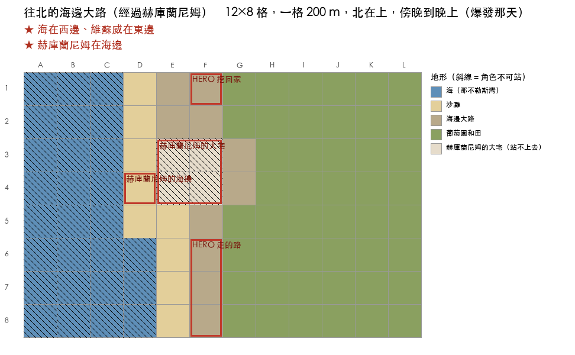
第 10 場 插圖：火山碎屑流（不是實景） —・段落 9
旁白全文
- 9-01那天晚上，岩漿裡的氣體快用光了。
- 9-02噴發的力道變弱了。可是，別以為這樣就沒事。
- 9-03那根太重的雲柱撐不住，只升了一點點就垮下來，
- 9-04一路往下衝，越衝越快，變成一股貼著地面的滾燙沙暴，
- 9-05像高速公路上的車子那麼快。
- 9-06這叫做火山碎屑流。
- 9-07它可以燙到攝氏一千度，濃到讓人沒辦法呼吸，一路衝出好幾公里。
- 9-08半夜，第一波先撲向了赫庫蘭尼姆。
- 9-09幾乎一瞬間，就奪走了全城人的性命。
- 9-10考古學家在海邊的船屋裡，找到大約三百具骨骸。
- 9-11他們本來想從海上逃走，卻在等船的時候，被追上了。
- 9-12從骨頭上燒過的痕跡算出來，那團雲大約有五百度。
- 9-13這些人大多沒有被火燒的人常見的那種蜷縮姿勢。
- 9-14有學者認為，他們死得非常快；也有研究認為，他們是被慢慢烤熱、悶死的。到現在還在爭論。
- 9-15Petrone 還在一位罹難者的頭骨裡，找到一塊像玻璃一樣的東西。
- 9-16那是他的腦。超高的溫度，可能一瞬間就把腦燒成了玻璃。
- 9-17這是目前全世界唯一的例子。
- 9-18第二天一早，一股火山碎屑流衝進了龐貝，把還沒逃走的人，全部帶走了。
- 9-19那片黑暗，有人這樣形容：
- 9-20不像沒有月亮的夜晚，而像在上鎖的房間裡，把燈熄掉。
出場角色和狀態
- —
道具
插圖：雲柱垮下來變成貼地的滾燙沙暴、夜裡赫庫蘭尼姆海邊船屋裡等船的人（只畫剪影）、像玻璃的碎片、清晨漆黑的龐貝
地圖 （沒有實景，不用地圖）第 11 步
第 11 場 插圖：考古揭曉與今昔（不是實景） —・段落 10
旁白全文
- 10-01後來呢？
- 10-02龐貝被埋在四到六公尺厚的火山灰和浮石底下，一埋，就是一千六百多年。
- 10-03一直到 1748 年，才開始被有系統地挖出來。
- 10-04火山灰把遇難的人包了起來。身體腐爛以後，留下一個個人形的空洞。
- 10-051863 年，考古學家 Fiorelli 想到往洞裡灌石膏，
- 10-06就把他們最後一刻的姿勢，原封不動地翻了出來。
- 10-07像 Petrone 這樣的法醫人類學家，到今天都還在研究這些人。
- 10-08我們會知道那一天發生了什麼，主要是因為一個年輕人：小普林尼。
- 10-09他在海灣對岸親眼看到，後來寫成了兩封信。
- 10-10他的舅舅老普林尼，那天不但沒逃，還開船衝過海灣想去救人，
- 10-11結果，再也沒有回來。
- 10-12維蘇威上一次噴發，是 1944 年。
- 10-13今天，它的周圍，還住著六、七十萬人。
- 10-14美國地質調查局的火山學家 James Moore 說，躲火山最好的辦法很簡單：
- 10-15（停）別住在火山旁邊。
出場角色和狀態
- —
道具
插圖：龐貝被埋、1748 年開挖、往空洞灌石膏翻出人形（只畫輪廓）、小普林尼寫信、老普林尼開船、今天維蘇威山腳的房子
地圖 （沒有實景，不用地圖）第 11 步
第 12 場 往北的路・灰雨中 爆發那天・晚上・段落 11
第 13 場 博士的實驗室（研究小屋一樓） 現代・段落 12
旁白全文
- 12-01回到實驗室，你灰頭土臉，把那罐火山灰放在桌上。
- 12-02博士拿放大鏡看了很久。
- 12-03然後說：雜質太多了，看不出是夏天還是秋天。
- 12-04任務，不算完成。
- 12-05（停）你打開欠薪本，又記了一筆。
- 12-06至於古羅馬的錢幣？你一個都沒撿到。
出場角色和狀態
- HERO 夏天的打扮（跟 EP3、EP4 一樣：短袖、短褲、拖鞋，沒帽子、沒背包），灰頭土臉、打開欠薪本記一筆
- PROF 拿放大鏡看火山灰、搖頭
道具
裝了火山灰的玻璃罐、放大鏡、欠薪本
地圖 lab第 11 步
第 14 場 博士的實驗室（研究小屋一樓） 現代・段落 13
旁白全文
- 13-01下一集。博士又盯上了另一段歷史。
- 13-02而你的欠薪本，快要寫滿了。
出場角色和狀態
- HERO 夏天的打扮（跟 EP3、EP4 一樣：短袖、短褲、拖鞋，沒帽子、沒背包），抱著欠薪本
- PROF 眼睛發亮、攤開新地圖
道具
新的地圖（只畫圖案）、欠薪本
地圖 lab第 11 步
設定圖（這集新畫的）第 12 步
龐貝居民：男人（紅褐短袍）、女人（藍色長袍）、麵包師傅、小孩 REF_ROMANS 用在：第 3、6、7、9 場
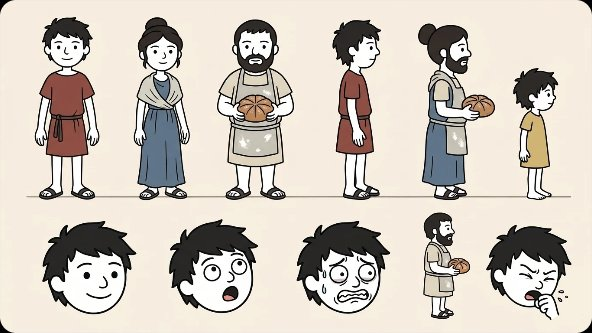
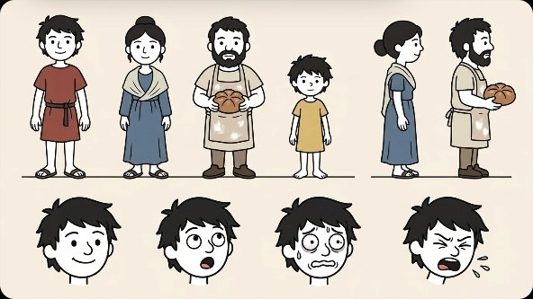
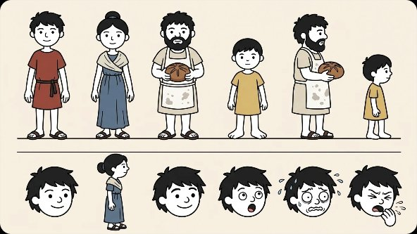
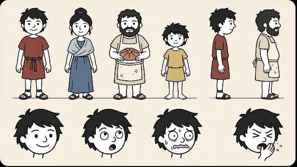
我選：第 2 條 四人正面清楚、八瓣麵包和圍裙對；四個表情大（開心、看呆、害怕、咳嗽）；四條的側面都不齊
prompt（中文）和附的參考圖
參考圖：REF_HERO、REF_PROF
EP5 道具：裝火山灰的玻璃罐、欠薪本、八瓣圓麵包（含炭化的）、熱食小攤、浮石、埋在灰裡的回家按鈕、火山模型 REF_PROPS5 用在：全集
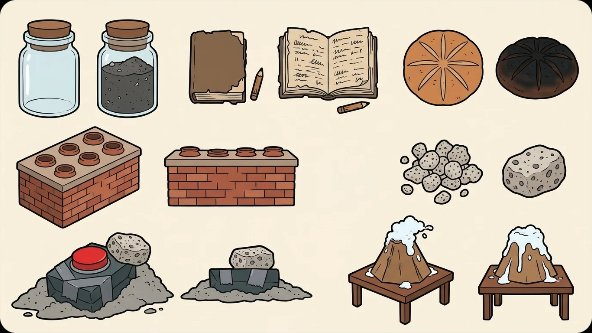
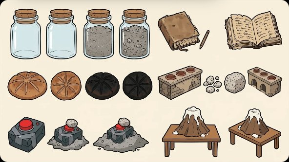
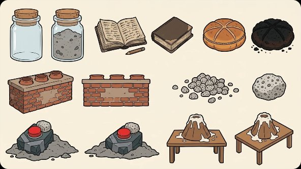
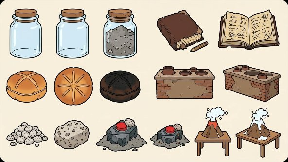
我選：第 1 條 第二批（第一批停程式時沒記到網址、被重畫）：7 樣都齊而且大；回家按鈕被浮石壓著埋在灰裡；沒有文字
prompt（中文）和附的參考圖
參考圖：REF_PROPS
維蘇威：爆發前的綠色火山、像雨傘松的噴發柱和落浮石、夜裡垮下來的碎屑流 REF_VESUVIUS 用在：第 3、6～12 場
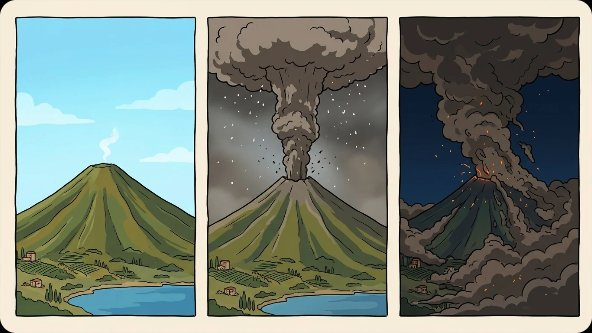
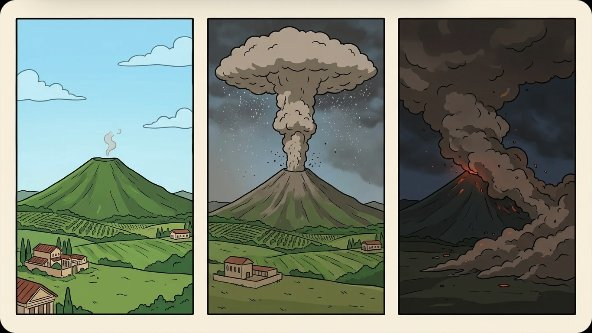
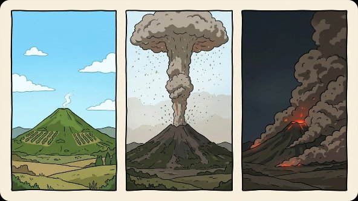
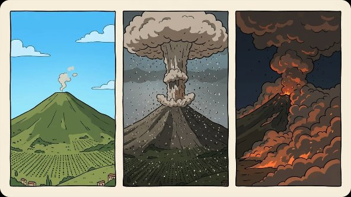
我選：第 2 條 雨傘松噴發柱；碎屑流是灰色的雲貼著山坡衝下（第 3、4 條畫成很多橘紅火，像熔岩，跟劇本「不會流出熔岩」衝突）；第一格有羅馬房子和葡萄園
prompt（中文）和附的參考圖
參考圖：REF_PROPS
龐貝街景：平常的石板街（踏石、店面、麵包店、熱食攤、噴泉）、爆發時落滿浮石的同一條街 REF_POMPEII 用在：第 3、6～8 場
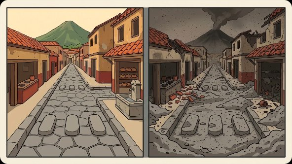
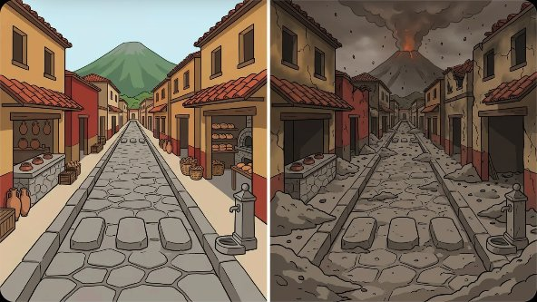
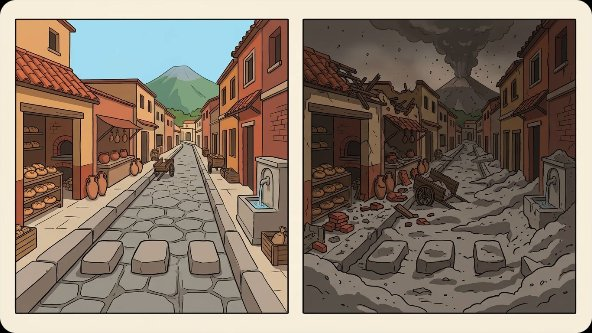
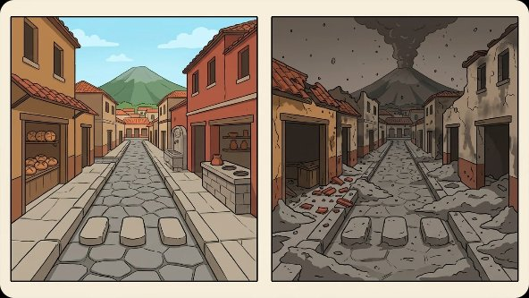
我選：第 3 條 兩格同一個角度；踏石、麵包店、熱食攤（嵌陶罐）、噴泉都有；爆發那格有浮石堆、壓垮屋頂、山只冒灰（第 2 條山頂有紅色熔岩）
prompt（中文）和附的參考圖
參考圖：REF_PROPS